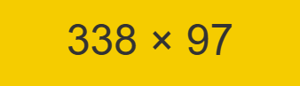
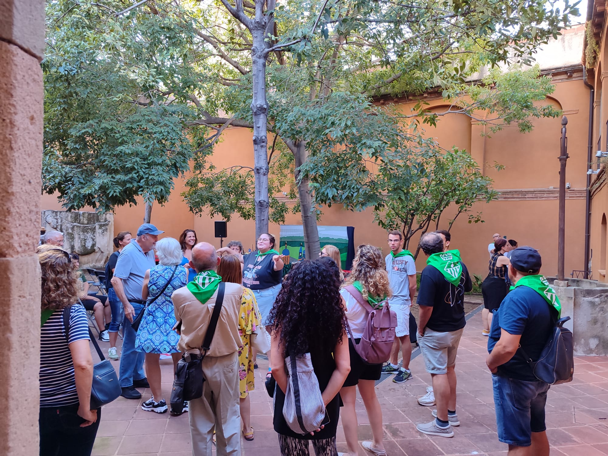

Espectacles
L'Àrea d'Espectacles d'ARCA TEMÀTICA està formada per músics, actors i directors de cinema i teatre, mims i artistes del món del circ.
L'ampli ventall d'artistes amb qui col·laborem ens permet donar forma a espectacles de molt diversos estils, adaptats al públic i a l'espai on es fan.

Espectacles a la carta
Preparem l'espectacle a partir del que necessiteu: una festa, una inauguració, una jornada o una celebració. Triem el format i els artistes que hi encaixen.
Contacontes
Històries explicades en veu alta, amb música, objectes o titelles, per a infants i famílies. Es poden fer en biblioteques, escoles o a l'aire lliure.
Visites teatralitzades
Personatges caracteritzats que expliquen la història d'un lloc en primera persona. Trobareu més informació a Educació i cultura.
-

Representació a l'aire lliure -

Espectacle en un pati -
Visita teatralitzada
Tens un grup o una idea? Explica'ns què necessites i et preparem una proposta a mida.